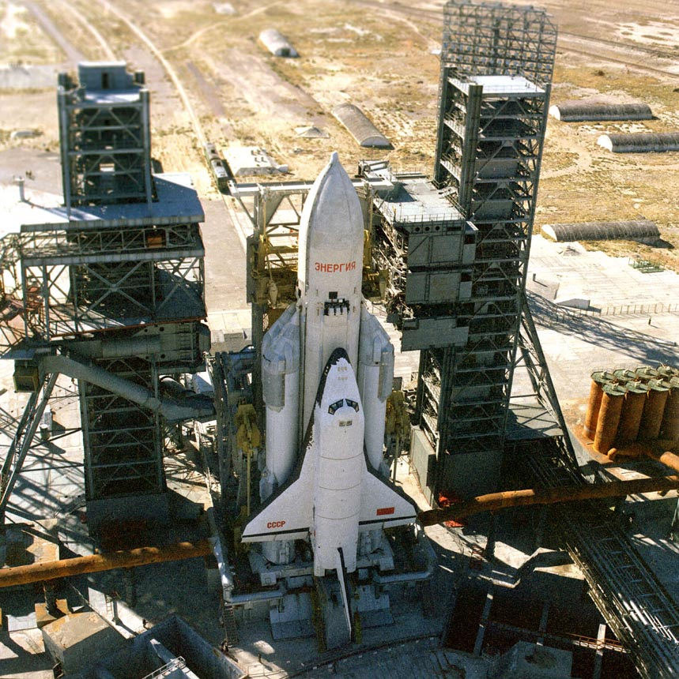
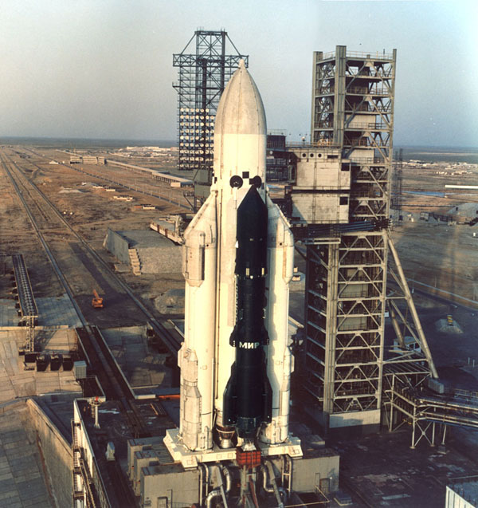

Energia-Buran Military Space System
Energia-Buran Space System was the apex of the russian engineering genius. Conceived to be an answer to the American slap on the face with it's Space Shuttle, it returned a hard blow. Because the Buran-Energia program surpassed all expectations.
It was an ambitious space military project of unprecedented scale. The Buran was a reusable space plane capable of unmanned landing, had digital control system with three computers running in parallel, emergency crew escape system. It was designed to dock to the MIR Space Station (somewhat ironically called MIR - Peace) and keep it there in case of serious political instability in the world, being ready to make a deadly strike from above.
Energia rocket was a marvel in it's own. Heavy lifter that was designed with an outlook of being enhanced to a super heavy lifter. It was supposed to not only carry the Buran Shuttle, but also other payloads, like the Polyus Space Weapons Platform.
That's engineering!


PS. Nice Youtube video with a soundtrack.